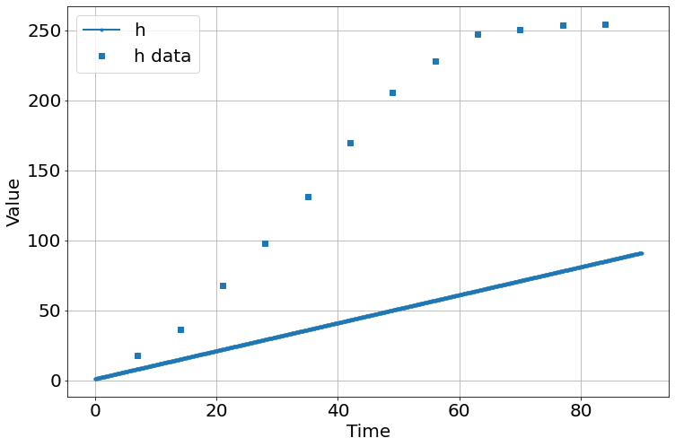
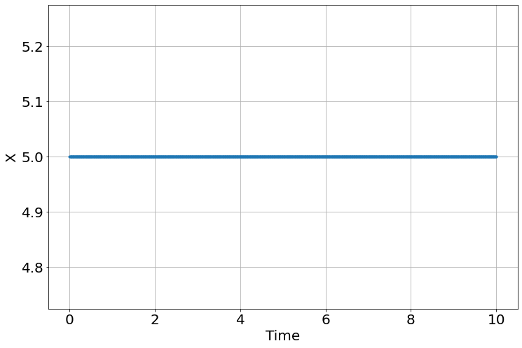

%pylab is deprecated, use %matplotlib inline and import the required libraries.
Populating the interactive namespace from numpy and matplotlib%pylab is deprecated, use %matplotlib inline and import the required libraries.
Populating the interactive namespace from numpy and matplotlibpyndamics3 version 0.0.31sim=Simulation()
sim.add("h'=a",1,plot=True)
sim.add_data(t=t,h=h,plot=True)
sim.params(a=1)
sim.run(0,90)
<Figure size 864x576 with 0 Axes>| fitting method | leastsq | |
| # function evals | 12 | |
| # data points | 12 | |
| # variables | 2 | |
| chi-square | 5339.27222 | |
| reduced chi-square | 533.927222 | |
| Akaike info crit. | 77.1752558 | |
| Bayesian info crit. | 78.1450691 |
| name | value | standard error | relative error | initial value | min | max | vary |
| a | 3.45220277 | 0.27604199 | (8.00%) | 1 | 0.00000000 | inf | True |
| initial_h | 6.28727440 | 14.2212935 | (226.19%) | 10 | 0.00000000 | inf | True |
| a | initial_h | -0.8832 |
%pylab is deprecated, use %matplotlib inline and import the required libraries.
Populating the interactive namespace from numpy and matplotlib# copied from http://be150.caltech.edu/2018/handouts/l12_stochastic_simulation.html
import numba
@numba.jit(nopython=True)
def _sample_discrete(probs, probs_sum):
q = np.random.rand() * probs_sum
i = 0
p_sum = 0.0
while p_sum < q:
p_sum += probs[i]
i += 1
return i - 1
class Stochastic_Simulation(object):
def __init__(self):
self.components=[]
self.equations=[]
self.initial_values={}
self.current_values={}
self.ν=None
self.state_change_strings=[]
self.rate_equations=[]
self.quasi=[]
self._params={}
self._params_keys=()
self._params_vals=()
def params(self,**kwargs):
self._params.update(kwargs)
self._params_keys=tuple(self._params.keys())
self._params_vals=tuple([self._params[_] for _ in self._params_keys])
def add(self,component_change_equation,rate_equation=None,plot=False,quasi=None,**kwargs):
if "=" in component_change_equation:
self.equations.append(component_change_equation)
return
component_change_equation=component_change_equation.replace('+',' +')
component_change_equation=component_change_equation.replace('-',' -')
parts=component_change_equation.split()
for part in parts:
if not (part.startswith('-') or part.startswith('+')):
raise SyntaxError("State change strings must start with + or -: %s" % component_change_equation)
name=part[1:]
if name not in self.components:
self.components.append(name)
self.state_change_strings.append(component_change_equation)
self.rate_equations.append(rate_equation)
self.initial_values.update(kwargs)
self.current_values.update(kwargs)
self.quasi.append(quasi)
def initialize(self):
import numba
import numpy as np
num_components=len(self.components)
num_reactions=len(self.rate_equations)
self.ν=np.zeros((num_reactions,num_components),int)
for j,(state_change,rate) in enumerate(zip(self.state_change_strings,self.rate_equations)):
parts=state_change.split()
for part in parts:
if not (part.startswith('-') or part.startswith('+')):
raise SyntaxError("State change strings must start with + or -: %s" % component_change_equation)
name=part[1:]
if part[0]=='-':
val=-1
else:
val=+1
i=self.components.index(name)
self.ν[j,i]=val
for c in self.initial_values:
if not c in self.components:
raise ValueError("%s not in components values." % c)
for c in self.components:
if not c in self.initial_values:
raise ValueError("%s not in initial values." % c)
#func_str="@numba.jit(nopython=True)\ndef _propensity_function(population, args):\n"
func_str="@numba.jit(nopython=True)\ndef _propensity_function_abcde(population, args):\n"
func_str+=" "
if len(self.components)>1:
func_str+=",".join(self.components) + " = population\n"
else:
func_str+=self.components[0] + ", = population\n"
if self._params_keys:
func_str+=" "
if len(self._params_keys)>1:
func_str+=",".join(self._params_keys)+ " = args\n"
else:
func_str+=self._params_keys[0]+ ", = args\n"
func_str+=" "+"\n"
for eq in self.equations:
func_str+=" "+eq+"\n"
func_str+=" "+"\n"
func_str+=" "+"val = np.array([\n"
for a in self.rate_equations:
func_str+=" "+a+",\n"
func_str+=" "+"],float)\n"
for qi,q in enumerate(self.quasi):
if not q:
continue
func_str+=" "+f"if ({q}):\n"
func_str+=" "+" "+f"val[{qi}]=0\n"
func_str+=" "+f"if ((A==0) or (B==0)):\n"
func_str+=" "+" "+f"raise ValueError()\n"
func_str+=" "+"return val"
self.func_str=func_str
exec (func_str,globals())
self.propensity_function=_propensity_function_abcde
def run(self,t_max,Nsims=1,num_iterations=1001,):
from tqdm import tqdm
if self.ν is None:
self.initialize()
_propensity_function=self.propensity_function
@numba.jit(nopython=True)
def _ssa(update, population_0, time_points, args):
# Initialize output
pop_out = np.empty((len(time_points), update.shape[1]), dtype=np.int64)
# Initialize and perform simulation
i_time = 1
i = 0
t = time_points[0]
population = population_0.copy()
pop_out[0,:] = population
extinction_time=-1.0
previous_t=t
while i < len(time_points):
while t < time_points[i_time]:
# draw the event and time step
event, dt = _draw(population, args)
# Update the population
population_previous = population.copy()
population += update[event,:]
# Increment time
previous_t=t
t += dt
if dt==1e500 and extinction_time<0.0:
extinction_time=previous_t
# Update the index (Have to be careful about types for Numba)
i = np.searchsorted((time_points > t).astype(np.int64), 1)
# Update the population
for j in np.arange(i_time, min(i, len(time_points))):
pop_out[j,:] = population_previous
# Increment index
i_time = i
return pop_out,extinction_time
@numba.jit(nopython=True)
def _draw(population, args):
"""
Draws a reaction and the time it took to do that reaction.
Assumes that there is a globally scoped function
`prop_func` that is Numba'd with nopython=True.
"""
# Compute propensities
props = _propensity_function(population, args)
# Sum of propensities
props_sum = np.sum(props)
if props_sum==0:
time=1e500
rxn=0
else:
# Compute time
time = np.random.exponential(1 / props_sum)
# Draw reaction given propensities
rxn = _sample_discrete(props, props_sum)
return rxn, time
self.all_storage=[]
disable=Nsims==1
population_0=np.array([self.initial_values[c] for c in self.components], dtype=int)
time_points=np.linspace(0,t_max,num_iterations)
args = np.array(self._params_vals)
n_simulations = Nsims
# Initialize output array
pops = np.empty((n_simulations, len(time_points), len(population_0)), dtype=int)
extinction_time=np.empty(n_simulations,dtype=np.float64)
# Run the calculations
for _i in tqdm(range(n_simulations),disable=disable):
pops[_i,:,:],extinction_time[_i] = _ssa(self.ν,
population_0, time_points, args=args)
self.t=time_points
self.extinction_times=extinction_time
D={}
for _i,c in enumerate(self.components):
v=pops[:,:,_i]
if v.shape[0]==1:
v=v.ravel()
setattr(self, c,v)
D[c]=v
for eq in self.equations:
exec(eq,D)
name=eq.split('=')[0].strip()
setattr(self, name,D[name])def _simfunc(_vec,t,_sim):
initial_h=_sim.initial_value['h']
a=_sim.original_params['a']
h=_vec[0]
_diff=[]
_val=a
_diff.append(_val)
return _diff

<Figure size 432x288 with 0 Axes>sim=ChemSimulation(
"""
D --k1--> D+M
M --k2--> M+P
M --k3--> ϕ
P --k4--> ϕ
""",D=1,M=0,ϕ=0,P=0,k1=.01,k3=0.00577,k4=0.0001925,k2=20*0.00577)['D'] k1 ['D', 'M']
['M'] k2 ['M', 'P']
['M'] k3 ['ϕ']
['P'] k4 ['ϕ']
Components ['D', 'M', 'P', 'ϕ']
Parameters ['k1', 'k2', 'k3', 'k4']
diffeqs ["D' = 0", "M' = +k1*D -k3*M", "P' = +k2*M -k4*P"]{'from_values': <function pyndamics3.core.array_wrap.<locals>.what(*args, **kw)>,
'sin': <function pyndamics3.core.array_wrap.<locals>.what(*args, **kw)>,
'cos': <function pyndamics3.core.array_wrap.<locals>.what(*args, **kw)>,
'exp': <function pyndamics3.core.array_wrap.<locals>.what(*args, **kw)>,
'tan': <function pyndamics3.core.array_wrap.<locals>.what(*args, **kw)>,
'abs': <function pyndamics3.core.array_wrap.<locals>.what(*args, **kw)>,
'floor': <function pyndamics3.core.array_wrap.<locals>.what(*args, **kw)>,
'ceil': <function pyndamics3.core.array_wrap.<locals>.what(*args, **kw)>,
'radians': <function pyndamics3.core.array_wrap.<locals>.what(*args, **kw)>,
'degrees': <function pyndamics3.core.array_wrap.<locals>.what(*args, **kw)>,
'sinh': <function pyndamics3.core.array_wrap.<locals>.what(*args, **kw)>,
'cosh': <function pyndamics3.core.array_wrap.<locals>.what(*args, **kw)>,
'tanh': <function pyndamics3.core.array_wrap.<locals>.what(*args, **kw)>,
'arccos': <function pyndamics3.core.array_wrap.<locals>.what(*args, **kw)>,
'arcsin': <function pyndamics3.core.array_wrap.<locals>.what(*args, **kw)>,
'arctan': <function pyndamics3.core.array_wrap.<locals>.what(*args, **kw)>,
'arctan2': <function pyndamics3.core.array_wrap.<locals>.what(*args, **kw)>,
'min': <function pyndamics3.core.array_wrap.<locals>.what(*args, **kw)>,
'max': <function pyndamics3.core.array_wrap.<locals>.what(*args, **kw)>,
'sqrt': <function pyndamics3.core.array_wrap.<locals>.what(*args, **kw)>,
'log': <function pyndamics3.core.array_wrap.<locals>.what(*args, **kw)>,
'log10': <function pyndamics3.core.array_wrap.<locals>.what(*args, **kw)>,
'mean': <function pyndamics3.core.array_wrap.<locals>.what(*args, **kw)>,
'median': <function pyndamics3.core.array_wrap.<locals>.what(*args, **kw)>,
'pi': 3.141592653589793,
'inf': inf,
'k1': 0.01,
'k2': 0.1154,
'k3': 0.00577,
'k4': 0.0001925}"D'=0\nM'=+k1*D -k3*M\nP'=+k2*M -k4*P\nk1=0.01\nk2=0.1154\nk3=0.00577\nk4=0.0001925\n"def _simfunc(_vec,t,_sim):
initial_D=_sim.initial_value['D']
initial_M=_sim.initial_value['M']
initial_P=_sim.initial_value['P']
k1=_sim.original_params['k1']
k2=_sim.original_params['k2']
k3=_sim.original_params['k3']
k4=_sim.original_params['k4']
D=_vec[0]
M=_vec[1]
P=_vec[2]
_diff=[]
_val=0
_diff.append(_val)
_val=+k1*D -k3*M
_diff.append(_val)
_val=+k2*M -k4*P
_diff.append(_val)
return _diff